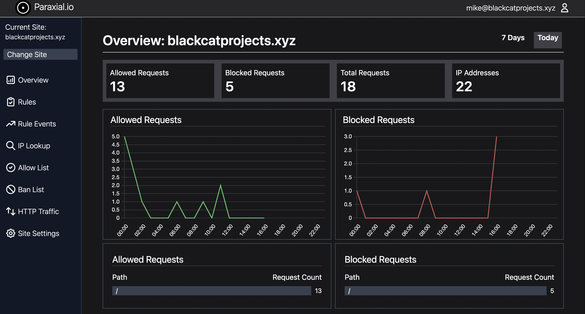

User Manual
Introduction
Welcome to the Paraxial.io user manual. This document focuses on using Paraxial.io to effectively block malicious traffic to a site, and requires you to first install the Paraxial.io agent.
Index
-
Definitions
-
Creating a New Site
-
The Overview Page
-
Defining Rules
-
Rule Events
-
Allow/Block List
-
HTTP Traffic
-
Site Settings
-
Webhooks
-
Exclude data collection for specific routes
-
Honeypot URLs
-
Exploit Guard
-
FAQ
1. Definitions
Site - An Elixir/Phoenix/Plug web application that has the Paraxial agent installed and running. You create a site through the Paraxial web interface, provide the site API key to the Paraxial agent, and a connection is established between the Paraxial server and your application. A site has many rules, allowed IP addresses, banned IP address, and site members.
Rule - A user defined condition such as, "If one IP address sends > 20 POST requests to /users/log_in in a period of 5 seconds, create an alert and ban the IP address." A benefit of Paraxial over traditional systems is that if an IP sending hundreds of requests per second, it will only be permitted to send 20 requests, the 21st will be banned. Compare this with a periodic database query, which would allow hundreds of requests before banning the client.
Rule Event - When an IP address matches a rule, such as, "If an IP sends > 20 POST requests to /users/log_in in a period of 5 seconds, alert and ban", a rule event is created. The rule event contains information about what caused the rule to be triggered.
Allow List - A list of IP prefixes defined by the user. If an IP matches a prefix on this list, it will always be allowed through. Supports IPv4 and IPv6 prefixes.
Ban List - Similar to Allow List, matching requests will never succeed. Supports IPv4 and IPv6 prefixes.
Site Admin - Has full control over the site.
Site User - Limited control over a site, for example this user cannot delete the site.
2. Creating a New Site
When you first create a site, select an appropriate name and timezone. Navigate to "Site Settings", and note the site API key. You will use it to install the Paraxial agent.
3. The Overview Page

The Paraxial.io overview page shows several interesting facts about your site, including:
- Allowed and blocked requests
- Total IP addresses
- Hourly and daily charts
Click the "7 Days" link in the upper right hand corner to switch to the week view.
4. Defining Rules
Paraxial.io allows users to define "Rules", which are conditions in their web application related to incoming HTTP traffic. The following are examples of rules:
-
If an IP sends > 5 POST requests to /accounts/new_user in a 20 second period, create an alert. -
If an IP sends > 10 requests of any HTTP method to /projects/*/export in a 12 second period, create an alert and ban the IP address. -
If an IP sends > 100 requests of any HTTP method to any path in a 5 second period, ban the IP address.
The purpose of defining rules is to prevent a malicious client from sending an excessive number of unwanted requests. Some examples of requests that you may want to throttle may be related to:
- Login attempts
- New account creation
- Credit card transactions
- Email sending
- Expensive computation
- Excessive total requests (scraping, vulnerability scanning)
- Denial of service attacks
The Rule Creation Form:
To create a rule, navigate to:
app.paraxial.io/site/:your_site/new_rule
You should see a form that says Create new rule for :your_site, with some fields. These are:
Rule name- A user provided string, it should be a descriptive comment on what the rule intends to do.N requests- The number of requests one IP address can make in the given time period before matching the rule.Time period in seconds- If you wish to limit login requests to 10 every 5 seconds, this value should be 5.Path- The path of the incoming request. Uses a custom pattern matching language detailed below.HTTP Methods- Examples include GET, PUT, POST. Uses a custom pattern matching language detailed below.On trigger- When the rule is matched, you may create an alert, ban the IP, or do both.
Example Rule Creation
To create the rule If an IP sends > 5 POST requests to /accounts/new_user in a 20 second period, create an alert and ban the IP address, the following form values are used:
-
Rule name- This is an arbitrary value, written to be understood by users of Paraxial.io. You could name this "Alert and ban on excessive logins in short period", or "ATO > 5 in 20s to /accounts/new_user". The behavior of the rule is independent of this string, similar to comments in a programming language. -
N requests-5 -
Time period in seconds-20 -
Path-/accounts/new_user- This must be entered exactly as provided here. If your value does not start with a/, it will be rejected. More details are below on how path matching works. -
HTTP Methods-POST- This must be entered exactly as provided here. More details on http method matching below. -
On trigger-Create an alert and ban the IP
Field Details
N requests
N requests must be > 0 and < 999.
Time period in seconds
Time period in seconds must be > 0 and < 86,400.
Path
The "Path" field uses a custom language for matching on paths. Examples are:
Path * - Match any path.
Matching:
paraxial.io/new_user
paraxial.io/site/paraxial.io/settings
paraxial.io/site/paraxial.io/edit_users/update
Path /new_user - Only matching incoming requests for the route new_user.
Matching:
paraxial.io/new_user
paraxial.io/new_user/
paraxial.io/new_user//
paraxial.io/new_user///
Will not match:
paraxial.io/new_user/a/new_user
paraxial.io/new_user/!
paraxial.io/new_user/a
Path /site/*/settings - Matching incoming requests for the route /site/:any_value/settings.
Matching:
paraxial.io/site/paraxial.io/settings
paraxial.io/site/paraxial.io/settings/
paraxial.io/site/customsitehere.com/settings
paraxial.io/site/customsitehere.com/settings/
Will not match:
paraxial.io/site/paraxial.io
paraxial.io/site/paraxial.io/settings/edit_users
Path /site/*/settings/* - Matching incoming requests for the route /site/:any_value/settings/:any_value.
Matching:
paraxial.io/site/paraxial.io/edit_users
paraxial.io/site/paraxial.io/list_users
Will not match:
paraxial.io/site/paraxial.io/edit_users/update
paraxial.io/site/paraxial.io
HTTP Methods
The HTTP Methods field takes a list of comma separated HTTP method names, such as:
GET, POST, PUT
for use in rule matching. It also supports the wildcard * character, to match all HTTP methods. These are:
GET, HEAD, POST, PUT, DELETE, CONNECT, OPTIONS, TRACE, PATCH
To match all HTTP methods, input: *
To match GET only, input: GET
To match GET and POST, input: GET, POST
To match GET, POST, and PUT, input: GET, POST, PUT
On Trigger
There are three options for On Trigger:
- Create alert and ban the IP
- Only alert, do not ban
- Only ban, do not alert
5. Rule Events
The rule events page lists useful information about why an IP address matched a rule. This includes:
- The rule that was matched
- How many requests the IP sent in the rule time period
- If the IP is currently on the allow or ban lists
- Associated login attempts from the IP, if
paraxial_login_user_nameandparaxial_login_successassigns are in use by your application - The matching HTTP requests, with timestamps
6. Allow/Block List
The IP block and allow lists support IPv4 and IPv6 prefixes. Examples include:
3.5.140.0/222600:1f14:fff:f800::/56
7. HTTP Traffic
This page displays the most recent 1,000 HTTP events for your site. For each request, you can see:
- IP Address
- HTTP method
- Path requested
- Status code (200, 404, etc.)
- Currently logged in user, if
paraxial_current_userassigns is used - User Agent
- If the request was allowed
- IP Class, set if the IP matches a cloud provider (AWS, GCP, etc.)
- Timestamp
8. Site Settings
Current settings are:
- Change site timezone
- Delete site (and all associated site data)
- Add/remove users to your site
- Configure Webhooks
9. Webhooks
To configure webhook URLs:
Site > Site Settings > Edit Webhooks
The outbound POST request will be sent on rule events with "alert" configured. That is, "Create an alert and ban the IP" or "Only alert, do not ban". If you need a fast way to test this locally, nrgok is useful.
Bot Defense Rule Webhook:
{
"event_uuid": "a14c3232-cb2a-42e6-834c-01f008481add",
"failed_logins": {
"attacker2@bots.io": 1,
"attacker@bots.io": 1
},
"http_methods": ".*",
"ip_address": "3.5.140.2",
"max_requests": 10,
"on_trigger": "alert",
"path": "^/+users/+log_in/*$",
"recorded_request_count": 12,
"rule_name": "Too many login",
"site_name": "local.house.com",
"successful_logins": {
"mike@blackcatprojects.xyz": 1
},
"time_seconds": 30,
"timestamp": "2022-09-01 16:46:45-04:00 EDT"
}
event_uuid: Corresponds to the rule event UUID in the GUI
failed_logins: List of email addresses, and the number of failed logins for each, for the past 7 days
http_methods: The HTTP methods (GET, POST, PUT) that match the defined rule
ip_address: The IP of the client that triggered the alert
max_requests: The maximum number of requests a client may send before triggering the rule
on_trigger: Can be "alert", "ban", or "alert_ban"
path: The Phoenix router path for matching requests
recorded_request_count: The number of requests the client sent to trigger the alert
rule_name: The user-defined name of the rule
site_name: The user-defined name of the site the rule event was created for
successful_logins: List of email addresses, and number of successful logins for each, for past 7 days
time_seconds: The duration of the rule for request matching
timestamp: The time the rule was triggered, timezone determined by site settings
Exploit Guard Webhook:
{
"exploit_uuid": "7915e8eb-6e53-43b7-a67b-1ae7825859d3",
"message": "\n13:38:54.294726 <0.908.0> erlang:binary_to_term(<<131,112,.. 0>>)\n",
"mode": "block",
"site_name": "potionshop",
"timestamp": "2023-06-06 13:38:54-04:00 EDT"
}
exploit_uuid: Corresponds to the exploit UUID in the GUI
message: Metadata about the function that was created at runtime
mode: The mode (monitor or block) of the agent when the exploit data was captured
site_name: The user-defined name of the site matching this exploit
timestamp: The time the event was triggered, timezone determined by site settings
10. Exclude data collection for specific routes
The pricing on Paraxial.io is by the number of good events sent by the agent to the backend. A good event means one HTTP request sent to your web app. So if 5 users send a total of 50 requests, that's 50 good events. If a spammer sends 5,000 blocked requests, those don't count. By default, the agent sends all HTTP requests to the backend.
To only collect data for specific routes, set your configuration at compile time to the code below, by editing your config/dev.exs, config/test.exs, and config/prod.exs files.
Do NOT set only: or except: at runtime, the agent uses metaprogramming to generate code at compile time. If you set only: or except: at runtime, the agent will ignore the config and send data for all routes. As of 2.0.0, you will get an error (see below).
To have the agent only send data to the backend for the following:
- GET /users/log_in
- POST /users/log_in
- GET /users/:id/settings
config :paraxial,
paraxial_api_key: System.get_env("PARAXIAL_API_KEY"),
...
only: [
%{path: "/users/log_in", method: "GET"},
%{path: "/users/log_in", method: "POST"},
%{path: "/users/:id/settings", method: "POST"}
]
To send events for all routes, except the following:
- GET /health_check
- GET /users/:id/status
config :paraxial,
paraxial_api_key: System.get_env("PARAXIAL_API_KEY"),
...
except: [
%{path: "/health_check", method: "GET"},
%{path: "/users/:id/status", method: "GET"}
]
After changing only/except in your compile time configuration, you must run:
mix deps.compile paraxial --force
Or you will get an error:
@ air % mix phx.server
ERROR! the application :paraxial has a different value set for key :except during runtime compared to compile time. Since this application environment entry was marked as compile time, this difference can lead to different behaviour than expected:
* Compile time value was not set
* Runtime value was set to: [%{method: "GET", path: "/health_check"}, %{method: "GET", path: "/users/:id/status"}]
To fix this error, you might:
* Make the runtime value match the compile time one
* Recompile your project. If the misconfigured application is a dependency, you may need to run "mix deps.compile paraxial --force"
* Alternatively, you can disable this check. If you are using releases, you can set :validate_compile_env to false in your release configuration. If you are using Mix to start your system, you can pass the --no-validate-compile-env flag
Note that you should only define rules for routes that have collection enabled. If you define a rule for a route, but disable collection for it, the rule will not work correctly.
If an attacker is banned due to triggering a rule, the attacker will be banned from all routes in your application, even if collection is not enabled for those routes.
11. Honeypot URLs
Honeypot URLs are used to create forms that are only visible by bots, not human visitors. Bots will fill in and submit the form, then be banned by Paraxial.io, preventing them from spamming your real forms.
Note: For honeypot URLs to work you should have already gone through Bot Defense Setup. Search your endpoint.ex file for plug Paraxial.AllowedPlug to confirm you completed that step.
1. Create the URL in your application
Site settings > Honeypot URLs > Edit > Create URL
Looks like:
https://app.paraxial.io/api/form_submit/e371b5a4-b698-4c60-8072-f024fad67fae
2. Find a controller that does not require auth, create the following action:
def honeypot_ban(conn, _params) do
url = YOUR_URL_HERE
body = Jason.encode!(%{"bad_ip" => Tuple.to_list(conn.remote_ip)})
headers = [{"Content-Type", "application/json"}]
Task.start(fn -> HTTPoison.post!(url, body, headers) end)
json(conn, %{ok: "system online"})
end
3. In your router, find a scope that goes through the :browser pipeline (for CSRF protection) and does not require auth, for example:
scope "/", ParaxWeb do
pipe_through :browser
post "/customer", PageController, :honeypot_ban
end
4. Create the form, with CSRF protection
Email/password example:
<%= form_for @conn, Routes.page_path(@conn, :honeypot_ban), [style: "display:none !important"], fn f -> %>
<%= text_input f, :email, tabindex: -1 %>
<%= text_input f, :password, tabindex: -1 %>
<%= submit "Register" %>
<% end %>
LiveView version:
def render(assigns) do
~H"""
<.form for={@form} id="customer_form" action={~p"/customer"} style="display:none !important">
<.input field={@form[:email]} type="email" label="Email" tabindex="-1" />
<.input field={@form[:password]} type="password" label="Password" tabindex="-1" />
<button>Register</button>
</.form>
...
# @form needs a value
def mount(_params, _session, socket) do
form = to_form(%{}, as: "user")
{:ok, assign(socket, form: form)}
end
12. Exploit Guard
Exploit Guard provides runtime application self protection for your application. To use Exploit Guard, ensure your agent version is >= 2.4.0.
Exploit Guard has two configurations, :monitor or :block:
monitor - No action will be taken, this is the "read only" option.
block - The process where the new function was created will be killed.
When Exploit Guard detects a new function is created at runtime, an alert will be sent to your Paraxial.io site. If you have a webhook configured, a POST request will be sent.
Example:
config :paraxial,
paraxial_api_key: "API_KEY",
exploit_guard: :monitor
To trigger an Exploit Guard event for testing, start your application with:
% iex -S mix
...
[info] [Paraxial] Exploit Guard set to block mode
...
iex(1)> a = :erlang.term_to_binary(fn x -> x end) # Enter this line
<<131, 112, 0, ...>>
iex(2)> :erlang.binary_to_term(a) # Enter this line
Now view the output:
iex(3)> [alert] [Paraxial] Exploit behavior detected, binary_to_term created function
[alert] [Paraxial] Exploit info:
13:36:14.732438 <0.736.0> erlang:binary_to_term(<<131,112,0 ...
[alert] [Paraxial] Block mode active, exploit process killed
[alert] [Paraxial] Exploit behavior detected, binary_to_term created function
[alert] [Paraxial] Exploit info:
13:36:14.742337 <0.736.0> erlang:binary_to_term/1 --> #Fun<erl_eval.42.3316493>
[alert] [Paraxial] Block mode active, exploit process killed
** (EXIT from #PID<0.736.0>) shell process exited with reason: killed
Interactive Elixir (1.13.0) - press Ctrl+C to exit (type h() ENTER for help)
iex(1)>
Visit Site > Exploit Guard to view the event.
Note that the agent was set to block mode, so the relevant exploit process was killed. For more information on how RCE exploits work in Elixir, see the article "Elixir/Phoenix Security: Remote Code Execution and Serialisation" - https://paraxial.io/blog/elixir-rce
13. FAQ
Do my users need to wait for a round trip network connection because of Paraxial.io?
No, the analysis takes place in the agent, there is no round-trip network connection required.
What happens in my application if the Paraxial.io agent cannot communicate with the Paraxial.io backend?
The agent will fail open, so your application will continue to function as it normally would without the agent installed.
How long is my site's data stored?
Seven days, after which it is automatically deleted.